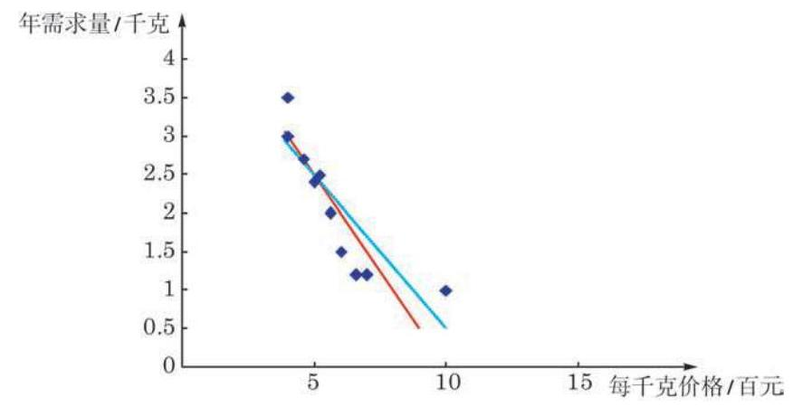

练习8.2(1) · 1
- 将学生甲所给的线性方程 作为本章 8.1 节例 1 数据的线性拟合, 计算各数据点的离差, 再计算拟合误差. 把结果与表 8-4 的数据相比较, 说说你对“最佳拟合”有什么新的理解和体会.
学生阅读版 / 沪教版高中数学
选择性必修第二册
第8章成对数据的统计分析 · 保留教材主线与原题
教材与正式教参整合
对于一组有某种线性关系的成对数据, 上一节介绍的相关系数分析了数据之间线性关系的方向与程度. 但有时我们还需要进一步了解其中一个变量随另一个变量变化的大致情况. 更准确地说, 我们要找到关联两个变量的一个线性方程, 使得在平面直角坐标系上数据所确定的点尽可能地 “贴近” 方程所定义的直线.
先回到本章 8.1 节的例 1. 为了找一条直线去“贴近”数据散点图 (图 8-1-1) 中的各点, 甲、乙两名同学分别给出了线性方程:
甲: ,
乙: .
我们在散点图上把这两个线性方程所定义的直线绘制出来, 如图 8-2-1 所示, 其中红色直线是甲的方程所定义的, 蓝色直线是乙的方程所定义的.

图 8-2-1
凭直觉我们很难断定哪条直线与数据点贴近得更好.
至此, 我们会提出问题: (1)有没有明确的标准来衡量直线与数据点的贴近程度? (2)如果有这样的标准，如何找出在此标准下最佳的直线?
要解决这两个问题, 可以用下面介绍的回归分析的方法.
一般地,设给定一组有线性相关关系的成对数据 、 和一个线性方程 (或称线性模型)
①
如何描述数据与此线性方程的贴近度呢?
由于离差可正可负, 考虑数据整体与线性方程①的贴近度时, 不能简单地用离差的代数和作为指标. 我们可以像计算方差那样, 用离差的平方和
②
③
公式③的一个初等的推导过程在本节的课后阅读中介绍. 回归系数 与 的值只与给定的数据有关，而与回归分析过程中初始选择的线性模型无关.
从回归系数公式 ③可以看出，回归直线经过样本点的中心 ,也就是散点图中数据点的中心.
有了回归系数 与 ,代入方程②就得到了这一组成对数据的回归方程. 这样, 我们对本节开头提的两个问题都有了明确的答案.
在解决具体问题时, 如果数据量不大, 可以用上面的公式直接计算出回归系数 与 ,进而得出回归方程. 如果数据量大, 就要借助统计软件, 通过计算机或计算器来实现这一过程了.
下面我们针对本章 8.1 节中的例 1 来求回归方程, 并理解回归直线与观察值之间的关系.
这个方程所定义的直线即这组数据的回归直线, 它是给定数据点的最佳拟合直线.
由回归方程,我们可以算出每个 对应的计算值 (结果精确到 0.1 )，列表 8-4 如下:
表 8-4
| 4.0 | 4.0 | 4.6 | 5.0 | 5.2 | 5.6 | 6.0 | 6.6 | 7.0 | 10 | |
| 3.5 | 3.0 | 2.7 | 2.4 | 2.5 | 2.0 | 1.5 | 1.2 | 1.2 | 1.0 | |
| 2.8 | 2.8 | 2.6 | 2.4 | 2.3 | 2.2 | 2.0 | 1.8 | 1.6 | 0.4 | |
| 离差 | 0.7 | 0.2 | 0.1 | 0.0 | 0.2 | -0.2 | -0.5 | -0.6 | -0.4 | 0.6 |
据此可进一步算出拟合误差 0. . 它当然是这组数据的线性拟合中拟合误差所能达到的最小值.
如果两组数据之间的相关系数很小, 根据公式求回归系数还有意义吗?
有了上述准备，现在我们就能判断本节开始时学生甲和乙给出的线性方程哪个更贴近所给的数据点了. 学生乙所给的方程实际上是系数精确度不同的回归方程, 如果用这个方程来制作表 8-4, 只会出现一些由数据精确度不同引起的小误差; 学生甲所给的方程与回归方程有本质的差别.
A. 表示 与 之间的函数关系; B. 表示 与 之间的不确定关系;
C. 反映 与 之间的真实关系; D. 是反映 与 之间的真实关系的一种最佳拟合.
A. ; B. ;
C. 最小; D. 最小.
例 1 依据本章 8.1 节例 2 中某市高中男生身高与体重的抽样数据,运用电子表格办公软件求“体重” 关于“身高” 的回归方程.
| 气温 | 18 | 13 | 10 | -1 |
| 用电量 | 24 | 34 | 38 | 64 |
由表中数据可得回归方程 中 ,试预测当气温为 时,用电量约为___ .
| 70 | 115 | 130 | 190 | 195 | 400 | 450 | |
| 1.10 | 1.00 | 0.85 | 0.75 | 0.85 | 0.67 | 0.50 |
| 编号 | 高度/cm | 千重/g | 编号 | 高度/cm | 干重/g |
| 1 | 136 | 15.01 | 13 | 147 | 16.87 |
| 2 | 136 | 14.88 | 14 | 150 | 17.13 |
| 3 | 135 | 15.12 | 15 | 148 | 17.26 |
| 4 | 138 | 14.99 | 16 | 150 | 18.13 |
| 5 | 139 | 15.54 | 17 | 149 | 17.66 |
| 6 | 138 | 15.24 | 18 | 152 | 17.84 |
| 7 | 141 | 15.68 | 19 | 151 | 18.17 |
| 8 | 143 | 15.88 | 20 | 154 | 18.36 |
| 9 | 142 | 18.16 | 21 | 155 | 17.95 |
| 10 | 144 | 16.33 | 22 | 155 | 18.65 |
| 11 | 148 | 15.99 | 23 | 157 | 18.89 |
| 12 | 146 | 16.57 | 24 | 156 | 19.26 |
| 年份 | 2009 | 2010 | 2011 | 2012 | 2013 | 2014 | 2015 | 2016 | 2017 | 2018 |
| 电费 /元 | 1323 | 1552 | 1679 | 1852 | 1975 | 2129 | 2327 | 2494 | 2667 | 2791 |
| 母亲身高 | 154 | 157 | 158 | 159 | 160 | 161 | 162 | 163 |
| 女儿身高 | 155 | 156 | 159 | 162 | 161 | 164 | 165 | 166 |
| 白鲸编号 | 游泳速度/(L/s) | 摆尾频率/Hz | 白鲸编号 | 游泳速度/(L/s) | 摆尾频率/Hz |
| 1 | 0.37 | 0.62 | 7 | 0.51 | 0.88 |
| 2 | 0.50 | 0.68 | 8 | 0.68 | 0.92 |
| 3 | 0.35 | 0.68 | 9 | 0.51 | 1.08 |
| 4 | 0.34 | 0.71 | 10 | 0.67 | 1.14 |
| 5 | 0.46 | 0.80 | 11 | 0.68 | 1.20 |
| 6 | 0.44 | 0.88 | 12 | 0.86 | 1.38 |
| 13 | 0.68 | 1.41 | 17 | 0.84 | 1.50 |
| 14 | 0.73 | 1.44 | 18 | 1.06 | 1.56 |
| 15 | 0.95 | 1.49 | 19 | 1.04 | 1.67 |
| 16 | 0.79 | 1.50 | / | / | / |
生物学家聚焦的研究问题是 “白鲸的摆尾频率依赖于其游泳速度吗”, 这里的因变量 是摆尾频率,自变量 是游泳速度.
(1)绘制数据散点图；
(2)建立 与 的回归方程.
(第 3 题)
| 工人编号 | 1 | 2 | 3 | 4 | 5 | 6 | 7 | 8 | 9 | 10 | 11 | 12 |
| 工龄 /年 | 5 | 5 | 6 | 6 | 6 | 7 | 7 | 8 | 8 | 9 | 10 | 10 |
| 劳动生产率 | 7.1 | 7.2 | 7.5 | 7.5 | 7.7 | 8.3 | 8.6 | 9.2 | 9.2 | 10.0 | 9.7 | 10.0 |
试建立工人操作新设备的劳动生产率 与工龄 的回归方程.
| 月份 | 产量 /千件 | 单位成本 |
| 1 | 2 | 73 |
| 2 | 3 | 72 |
| 3 | 4 | 71 |
| 4 | 3 | 73 |
| 5 | 4 | 69 |
| 6 | 5 | 68 |
(1)计算产量与单位成本的相关系数；
(2)建立产量与单位成本的回归方程；
(3)若该工厂计划 7 月份生产 7 千件该产品，则单位成本预计是多少？
| 学生人数 千人 | 2 | 6 | 8 | 8 | 12 | 16 | 20 | 20 | 22 | 26 |
| 月营业收入 /千元 | 58 | 105 | 88 | 118 | 117 | 137 | 157 | 169 | 149 | 202 |
(1)根据以上数据，建立月营业收入 与该店周围的大学生人数 的回归方程；
(2)已知某餐馆周围的大学生人数为 10000 人，试对该店月营业收入作出预测.
| 参与者编号 | 体重 | 脂肪含量 | 参与者编号 | 体重 | 脂肪含量 |
| 1 | 89 | 28 | 11 | 57 | 29 |
| 2 | 88 | 27 | 12 | 68 | 32 |
| 3 | 66 | 24 | 13 | 69 | 35 |
| 4 | 59 | 23 | 14 | 59 | 31 |
| 5 | 93 | 29 | 15 | 62 | 29 |
| 6 | 73 | 25 | 16 | 59 | 26 |
| 7 | 82 | 29 | 17 | 56 | 28 |
| 8 | 77 | 25 | 18 | 66 | 33 |
| 9 | 100 | 30 | 19 | 72 | 33 |
| 10 | 67 | 23 | / | / | / |
(1)分别建立男性和女性体重与脂肪含量的回归方程；
(2)男性和女性合在一起所构成的样本的回归方程为 ，其斜率与 (1)中所计算的斜率有差异吗？能否对这种差异进行解释？
(3)计算下列情况下体重与脂肪含量的相关系数:① 男性；② 女性；③ 男女合计. 这些值与(2)中所反映的信息是否一致？
在这个阅读材料中, 我们将用初等的方法推导本节中所介绍的回归系数公式③.
先回顾我们的问题. 设有一组成对的数据 和一个 与 的线性关系 . 对给定 ,令 . 我们要“优化”线性关系,使离差 的平方和 (即拟合误差)
达到最小值. 满足这个条件的线性关系是拟合数据的最佳选择.
为了找到最佳的线性关系, 我们从略微不同的角度考察拟合误差. 把拟合误差改写成
由于数据 是给定的,故 是 的二元函数. 于是问题化为: 求变量 的最小二乘估计 ,使函数值达到最小.
令 与 分别是数据 与 的算术平均值,则
因为 ,所以 ; 同理 . 这样,把上式对 从 1 到 求和,其最后两项所对应的和式都是 0 . 于是,
所以, 当
时, 取得最小值
亦即, 我们求得了模型参数的最小二乘估计
这就是本节正文的公式③.
上面推导过程的最后一步配方技巧性较强, 不过同学们可以通过展开平方式以验证等式的成立.